Limitazioni all'arrampicata alla Falesia del Tramonto (Erba, CO) per nidificazione rapaci. Su cinque vie sono stati rimossi i fix fino al 15 giugno. Attenzione: vietato accendere fuochi in tutta l'area.
2026
-
31 mar 2026
Accesso Si prega di non disturbare l'Allocco
-
27 mar 2026
Accesso Ritorno del Falco Pellegrino — Valle Bova
Ordinanza ufficiale che vieta l'arrampicata su vie specifiche nella Valle Bova per proteggere la nidificazione dei rapaci. Rispettare i divieti per preservare l'accesso futuro.
-
6 mar 2026
Nuova Zona Il Giardino di Preda
Nuova zona d'arrampicata vicino a Santa Maria sopra Olcio. Luogo molto bello, roccia idem, con formazioni particolari: canne, funghi ecc. Sviluppata da Francesco Maglia, Simone Limonta e Sebastien Comin.
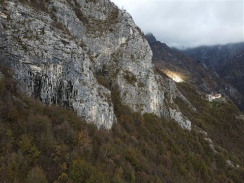
-
28 gen 2026
Nuove Vie Branchiosauro — tutte le vie liberate
Completamento del settore Branchiosauro. Otto Marzo: 7c+, da confermare. Crediti: Andrea Barbaglia e Delfino Formenti.
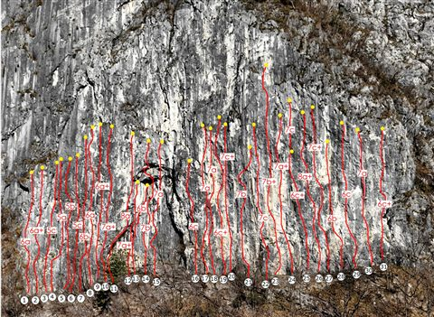
2025
-
1 gen 2026
Aggiornamento Falesia del Tramonto — nuova via e norme di comportamento
Nuova breve via sul settore non sviluppato. Manutenzione a cura di Roberto Lainati e Saverio De Toffol. Promemoria: non monopolizzare le vie, pulire le prese, smaltire correttamente i rifiuti. NON ACCENDERE FUOCHI.
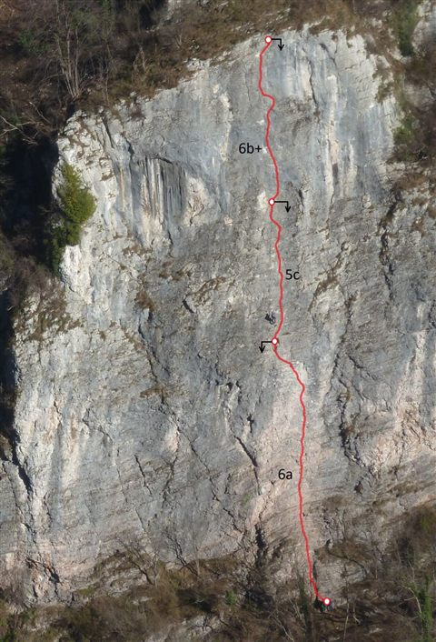
-
29 dic 2025
Richiodatura REBUS al Medale — richiodatura
Richiodatura della via REBUS al Medale ad opera di Federico Montagna e Luca Danieli. Aggiornamento di una via risalente al 1986.
-
24 dic 2025
Aggiornamento Isola di Pasqua — aggiornamento falesia
Area aggiornata nel territorio di Erve. Marco Nicolodi ha ampliato il numero di vie. Attenzione: segnalato pericolo di caduta massi in alcune zone.
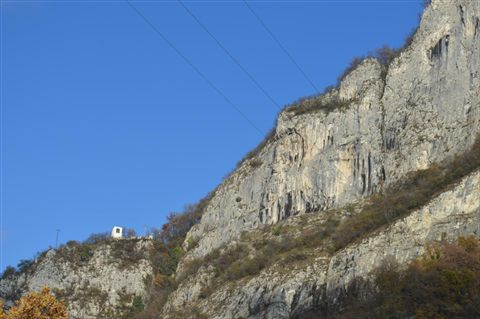
-
26 nov 2025
Sicurezza Attenzione ai furti di auto — Bastionata del Lago
Segnalati ripetuti furti e danneggiamenti alle auto parcheggiate alla Bastionata del Lago. Si consiglia di non lasciare nulla in vista e, se possibile, di lasciare l'auto aperta per evitare danni ai vetri.
-
23 nov 2025
Richiodatura Val di Mello — "Libe L¹" allo Scoglio delle Metamorfosi
Richiodatura della via Libe L¹ allo Scoglio delle Metamorfosi. Team: Alessandro Arrigoni, Fabio Elli, Camilla Lelmini.
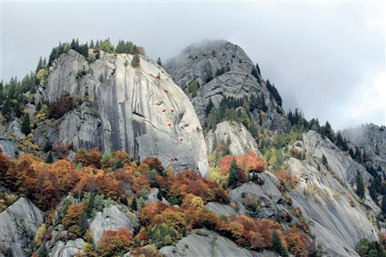
-
25 ott 2025
Nuova Zona Civate — "Valle delle Placche" in sviluppo
Il team di Alessandro Ronchi continua a sviluppare la Valle delle Placche a Civate. Riflessione sulla nascita di una falesia e sulle problematiche legate alla monopolizzazione delle vie in sviluppo.
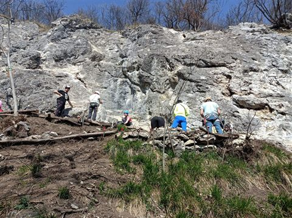
-
13 ott 2025
Pericolo Pilastro Orsa Maggiore — masso instabile
Segnalato un grosso masso instabile all'ancoraggio della via Gengis Trip. Prestare la massima attenzione.
-
27 set 2025
Pulizia Vaccarese — pulizia della falesia
Progetto di pulizia della falesia Vaccarese a cura di Tommaso Garota. Rimossa infrastruttura metallica obsoleta.
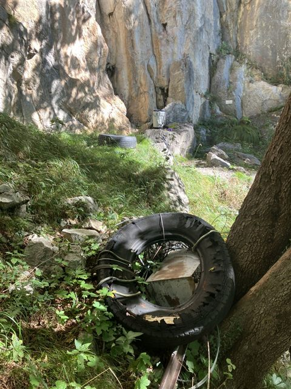
-
13 set 2025
Pulizia Bagai de Lecch — pulizia e manutenzione
Lavori di pulizia della vegetazione e rimozione di massi instabili. Contributi: Tommaso Garota, Guido Buratti, Giovanni Ripamonti.
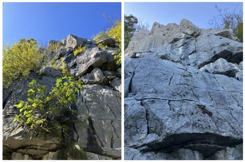
-
9 set 2025
Nuova Zona Medioevo — nuova falesia a Ballabio
Nuova falesia Medioevo a Ballabio sviluppata da Marco Nicolodi. Nota: problematiche di parcheggio nell'area.
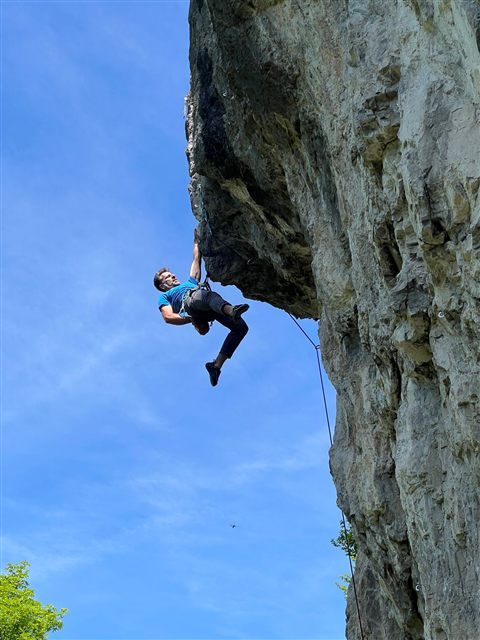
-
3 set 2025
Nuova Via Val Verva — Sasso di Castro
Area alpina nell'alta Valtellina. Sviluppata da Eraldo Meraldi, testata da Paolo Vitali.
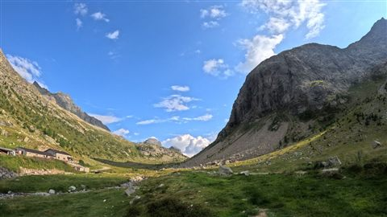
-
23 ago 2025
Storia Mongolfiera — Via dello Zio
Documentazione di Saverio De Toffol e Jorge Palacios. Interesse storico; roccia friabile, non consigliata per la pratica attuale.
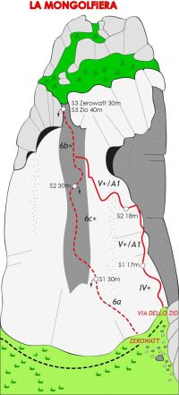
-
31 lug 2025
Riflessione Picett — discussione sullo sviluppo
Riflessione sull'area Picett: stile trad originale vs conversione sportiva 2025. A cura di Tommaso Garota e Guido Buratti.
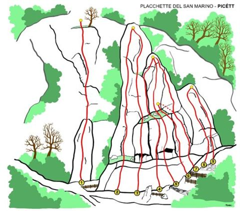
-
30 mag 2025
Nuove Vie Civate — Valle delle Placche, vie facili
Nuove vie di difficoltà bassa e media. Discussione sulla chiodatura volontaria nell'area.
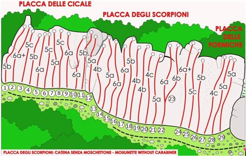
-
22 mag 2025
Nuova Zona Libro Aperto — Ballabio
Nuova falesia Libro Aperto a Ballabio sviluppata da Marco Nicolodi. Difficoltà medio-alta. Raccolta fondi in corso.
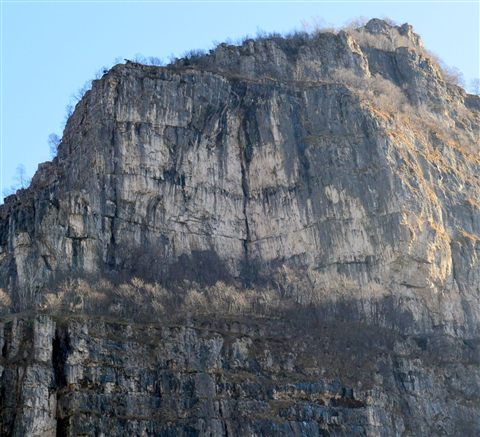
-
3 mag 2025
Richiodatura Punta Forcellino — Via Eclisse
Richiodatura a cura di Federico Montagna, Luca Danieli, Stefano Vergani, Riccardo Sala.
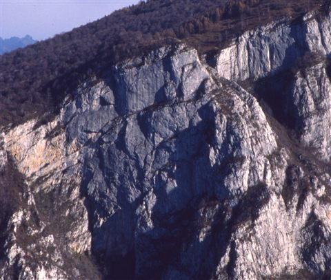
-
4 apr 2025
Accesso Falesia del Tramonto — chiusura stagionale
Restrizioni dal 2 aprile al 15 giugno 2025 per nidificazione rapaci.
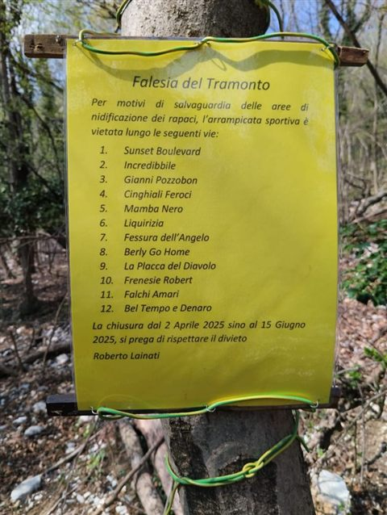
-
19 mar 2025
Storia Bastionata del Lago — Via degli Amici
Sergio Panzeri e Andrea Mariani. Storia del Lago di Lecco negli anni '70.
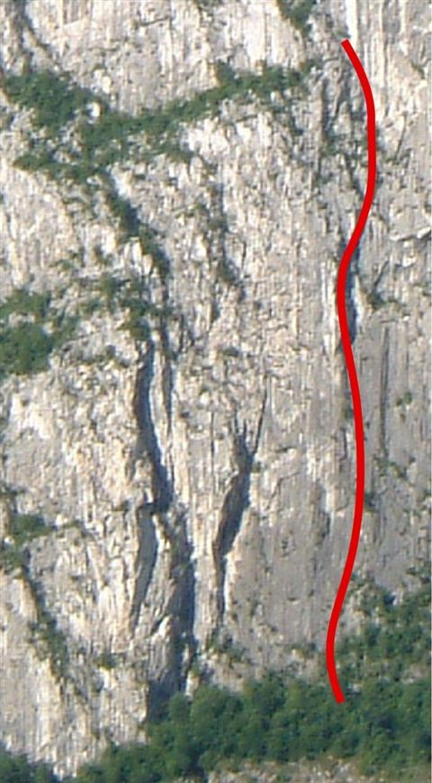
-
19 mar 2025
Nuova Via Pala dell'Eretico — "Vlad l'imperatore"
Nuova via sopra l'Abbazia di San Pietro al Monte. Sviluppatore: Luigi Mauri.
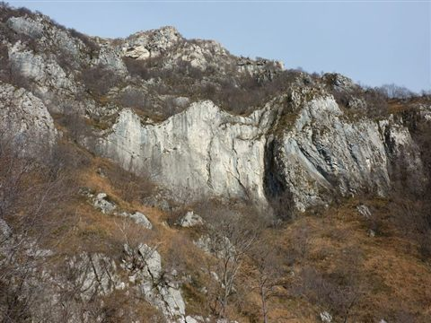
-
16 mar 2025
Nuova Zona Branchiosauro — presentazione
Presentazione del nuovo settore Branchiosauro sul lato est del Lago di Lecco. Sviluppatore: Delfino Formenti ("Delfix"). Raccolta fondi su ko-fi.com/unchiodointesta.
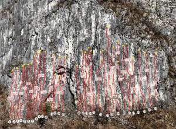